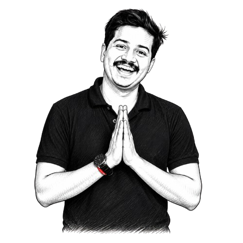

I'm based in Mumbai, working at the intersection of product design, mechanical engineering, and early-stage startups. Most of my days are split between hands-on design and engineering work — sketches, CAD, prototypes — and the consulting and mentorship work I do through riidl, one of India's leading design and innovation labs. It's a combination I didn't plan for, but one I've grown to think is exactly right for where Indian product-building is today.
I grew up in Mumbai and studied mechanical engineering here before leaving for Delft to do my master's in Industrial Design Engineering at TU Delft. The Netherlands years changed how I think — Delft has a particular rigour about design process that I absorbed deeply, and the exposure to European product culture gave me a reference point I still use constantly. I came back to Mumbai by choice. The problems here are harder, the constraints are real, and the opportunity to build things that matter to a billion people is not something you walk away from.
The most formative work I've done has been with early-stage hardware founders — people building physical products who are figuring out manufacturing, user fit, and investor narrative all at once. PSP Bowling Machines taught me that the gap between a working prototype and a shippable product is enormous, and that most founders don't know what they don't know until they're already in that gap. That's where I've learned to be useful — not as someone who knows all the answers, but as someone who's seen enough of the terrain to help teams avoid the expensive mistakes.
I care about building a culture of real-world product thinking in India — hardware, deep-tech, things you can hold. The startup ecosystem here is still heavily SaaS-oriented, and there's a generation of founders who want to build physical products but don't have enough experienced people around them who've actually done it. A big part of what I do through teaching, through Fab Academy, through the work at riidl, is trying to close that gap — one founder, one programme, one cohort at a time.
Meaningful Design
Design is a long-term responsibility. The products and services I work on should hold up not just on the day they ship, but for everything that comes after — the repairs, the edge cases, the five-years-later version of the user who bought it. Good design anticipates that. It's not just about solving the brief in front of you; it's about solving it in a way that doesn't create new problems downstream.
Minimalist Design
Less is more — not as an aesthetic preference, but as a design principle. The strongest solutions come from clarity and restraint, not from adding features. Every time I add something to a design, I ask whether it's earning its place: does it solve a real problem, or does it just make the thing look more complete? The designs I'm most proud of are the ones where I figured out what to leave out.